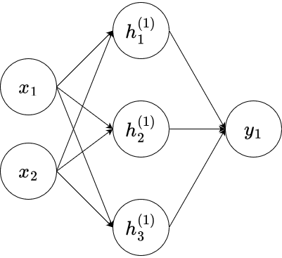
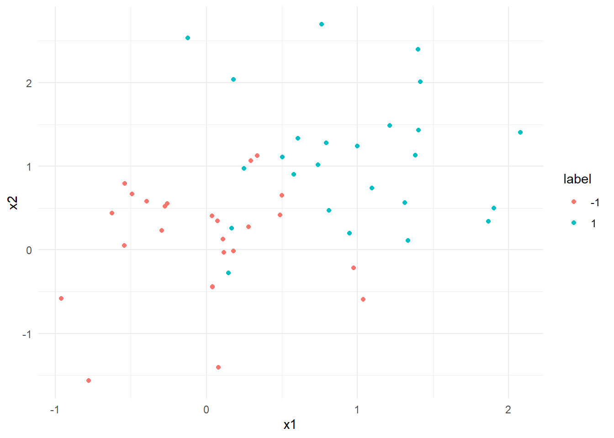
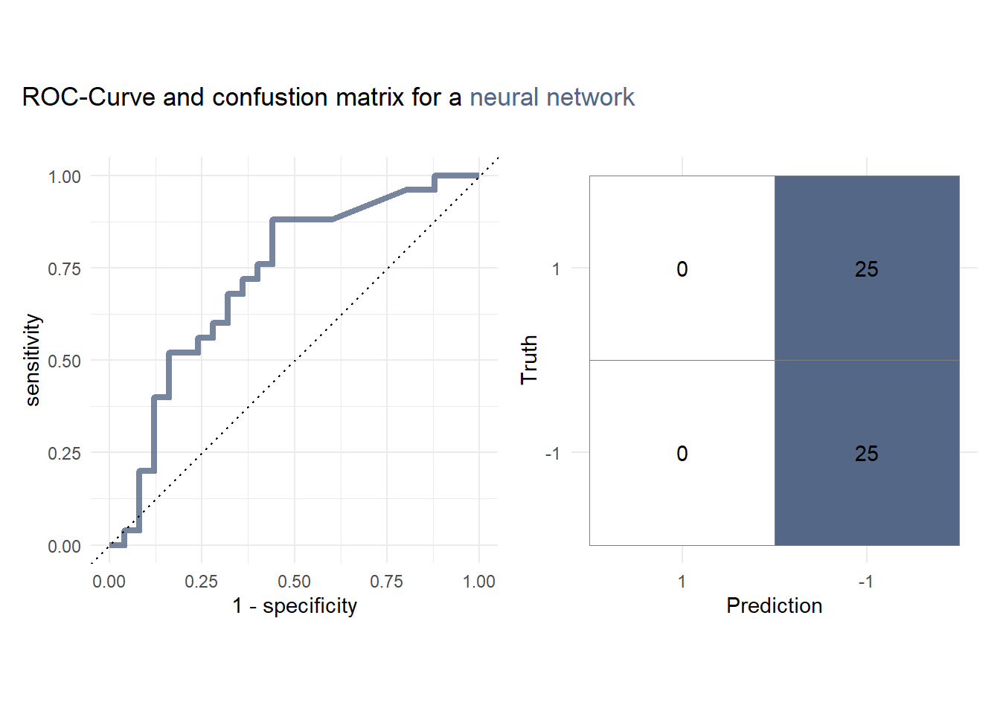
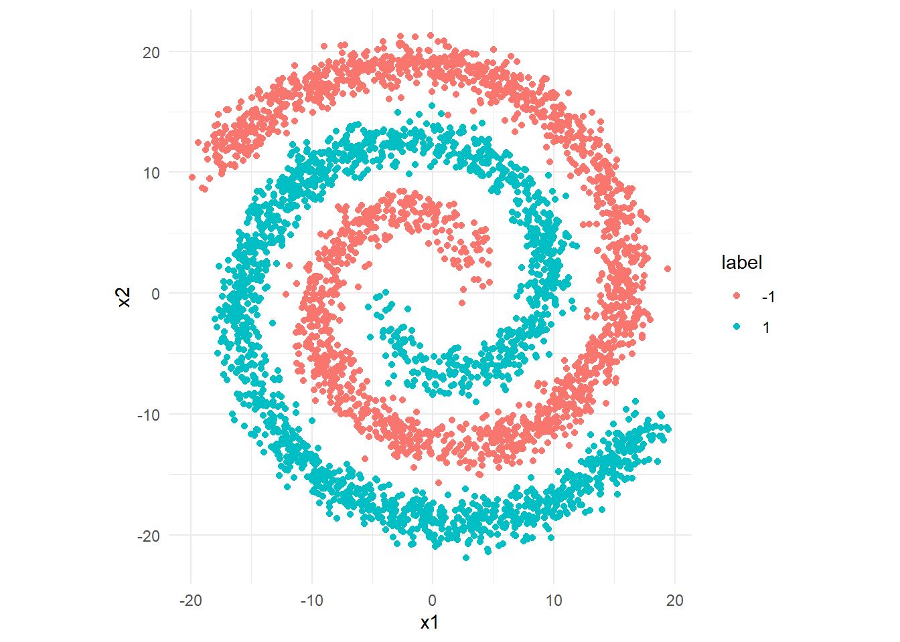

library(tidyverse)
library(tidymodels)
library(kernlab)
library(patchwork)
library(ggtext)
library(brulee)
library(finetune)
library(bonsai)
library(stacks)Problem Set 09
Foreword
In this exercise session, we will consider some theoretical and practical aspects of neural networks. Neural networks are by now, probably the most commonly used models in Machine Learning Research and application, as they offer a highly versatile and well-performing approach for both, classification and regression tasks. However, as we have seen when considering models like XGBoost with great performance comes great computational cost. Training neural networks not only requires a lot of data to yield satisfactory results but can also take a long time to train, depending on the number of features and samples.
Personal Opinion: Training neural networks in R is certainly possible, but not ideal. Most machine learning libraries and neural network architectures are far more accessible in scripting languages like Python, which encompass a much wider variety of development frameworks.
Exercises
Exercise 01: Theoretical foundations
Notation
The notation used on this exercise sheet will be somewhat different from the notation in the lecture. However, I will try to explain every notational aspect as clearly as possible.
In the following two sub exercises, we will consider the neural network depicted below.

Here,
\((x_1, x_2)^\top\in \mathbb{R}^2\) denotes an input vector
\(\{h_i^{(1)}\}_{i=1}^3\) denote a hidden layer with each neuron defined by \[ h_i^{(1)} := \sigma_1\left(\sum_{j=1}^{2}w_{ij}^{(1)} x_j + b_1\right),\tag{1}\] where \(\sigma_1:\mathbb{R}\to\mathbb{R}\) denotes an activation function, \(w_{i1}^{(1)},w_{i2}^{(1)}, b_1\in\mathbb{R},i=1,...,3\) denote weights and a bias for the first layer.
\(y_1\) is the output of the neural network that is defined as \[ y_1 = \sigma_2\left(\sum_{i=1}^{3}w_{i1}^{(2)}h_i^{(1)}+b_2\right),\tag{2}\] where \(\sigma_2:\mathbb{R}\to\mathbb{R}\) denotes another activation function, and \(w_{i1}^{(2)}, b_2\in\mathbb{R},i=1,...,3\) denote weights and a bias for the second/final layer.
Exercise 01a:
Assume that \(\sigma_1 = \sigma_2 = \mathrm{ReLU}\), i.e., \(x\mapsto \max\{0,x\}\). Set up the model equation for this neural network by expanding the term \(y_1\).
Exercise 01b :
The goal of this exercise is for you to implement and visualize the neural network above.
Exercise 01b i:
Write a function nn that represents the neural network of the previous exercise. It should take a vector \(x\in\mathbb{R}^2\), a weight matrix \(w1\in\mathbb{R}^{3\times 2}\) used to calculate \(h_i^{(1)}\), a weight vector \(w2\in\mathbb{R}^3\) used to calculate the term \(\sum_{i=1}^{3}w_{i1}^{(2)}h_i^{(1)}\) and two bias terms \(b1,b2\in\mathbb{R}\) as an input . The return value should be the output of the neural network we used in the previous exercises.
Exercise 01b ii:
Given the following weights, biases, and input matrix x, calculate the return value and plot the results using the geom_tile() function where the return value of the nn function is set to be the fill parameter.
Tip
You will have to use the lapply function to be able to apply the input matrix x to the function nn.
w1 <- matrix(c(0.2,0.2,0.3,0.3,0.2,0.2), ncol = 2)
w2 <- matrix(c(-0.3,0.2,0.3), nrow = 1)
b1 <- 0.2
b2 <- 0.3
x1 <- seq(-1,1,length.out = 100)
x2 <- seq(-1,1,length.out = 100)
x <- expand.grid(x1,x2) %>% as.matrixExerice 01c:
We can generalize the neural network above in a way that the hidden layer has \(n\in\mathbb{N}\) instead of \(3\) neurons. Modify Equation (2), such that the hidden layer now has \(n\in\mathbb{N}\) neurons! What are the benefits and drawbacks of adding additional neurons? Name one each.
Exercise 02: Neural networks - toy examples
For the following exercises, you can use the contour_plot function provided below, to plot the decision function of the specified model. Besides the model, you also have to specify the range of the data samples in order to get a full view of the decision function.
contour_plot <-function(model,axis_limit){
x_grid <- expand.grid(x1 = seq(-axis_limit,axis_limit,length.out = 100),
x2 = seq(-axis_limit,axis_limit,length.out = 100))
x_grid <- x_grid %>%
bind_cols(predict(model, x_grid, type = "prob"))
ggplot(x_grid, aes(x = x1, y = x2)) +
geom_point(data = data, aes(col = label), alpha = 1 / 2, cex = 3) +
geom_contour(aes(z = `.pred_1`), breaks = .5, col = "black", linewidth = 1)+
coord_fixed()+
theme_minimal()
}Exerxise 02a:
Let us revisit the toy dataset we used on the last exercise sheet:
data <- read.csv("ex01.csv") %>%
as_tibble() %>%
mutate( label = factor(y)) %>%
select(-y)
data %>%
ggplot(aes(x1,x2, color = label)) +
geom_point() +
theme_minimal()
Exercise 02a i:
Using our knowledge about SVMs, train an RBF-Kernel SVM on the data data, where x1 and x2 are fitted on label. You do not have to tune any parameters and can in fact use all the default values. For the resulting model, create a ROC-Curve, a confusion matrix, and with the help of the contour_plot function a plot visualizing the boundary.
Exercise 02a ii:
A simple interface within the {tidymodels} framework for training neural networks is provided by the {brulee} package.
Similar to all the models we trained before, we simply have to specify the model parameters and train our model using the fit function.
For this exercise, we are mainly interested in the following parameters:
epochs: An integer for the number of training iterationshidden_units: Can be either an integer or an integer vector. An integer indicates that only one hidden layer is used, while a vector specifies the number of layers by its length and the number of neurons by the values in the vector.learn_rate: A positive number indicating the step size for the optimization algorithm.
For this exercise, we will not tune any parameters but instead try a specific architecture.
Set up a mlp model called nnet_res with the parameters epochs = 200, hidden_units = c(2,4), and learn_rate = 0.1.
Calling nnet_res should then yield the following output:
Single Layer Neural Network Model Specification (unknown mode)
Main Arguments:
hidden_units = c(2, 4)
epochs = 100
learn_rate = 0.1
Computational engine: nnet Set the engine to "brulee", the mode to "classification", and train the model using the fit function by fitting the variables x1 and x2 of the dataset data on the variable label. Calling the trained neural net nnet_res then returns an output similar to the one below.
parsnip model object
Multilayer perceptron
relu relu activation
c(2,4) hidden units, 28 model parameters
50 samples, 2 features, 2 classes
class weights -1=1, 1=1
weight decay: 0.001
dropout proportion: 0
batch size: 45
learn rate: 0.1
validation loss after 19 epochs: 0.712 Similar to the exercise above, create a Roc-Curve, confusion matrix and a contour plot of the decision function.

Exercise 02a iii:
Compare the results of the models.
Exercise 02b:
Consider another dataset.
spirals <- function(n, sd){
set.seed(1)
theta = sqrt(runif(n,min = 0, max = 2))*2*pi
r1 <- 2*theta+pi
spiral1 = tibble(x1 = cos(theta)*r1 + rnorm(n,mean = 0, sd = sd),
x2 = sin(theta)*r1 + rnorm(n,mean = 0, sd = sd),
label = factor(rep(-1,n)))
r2 <- -(2*theta+pi)
spiral2 = tibble(x1 = cos(theta)*r2 + rnorm(n,mean = 0, sd = sd),
x2 = sin(theta)*r2 + rnorm(n,mean = 0, sd = sd),
label = factor(rep(1,n)))
data = rbind(spiral1,spiral2)
return(data)
}
data<- spirals(2000, 1)
data %>% ggplot(aes(x = x1, y = x2, color = label)) +
geom_point() +
theme_minimal()+
coord_fixed()
Exercise 02b i:
Repeat Exercise 02a i for this new dataset.
Exercise 02 b ii:
Repeat Exercise 02a ii for this new dataset.
Exercise 03:
In this last exercise, we want to extend our stacking model from Exercise Session 08, by replacing the simple classification tree with a neural network.
Below you can find the necessary preprocessing steps and model specifications for the random forest and XGBoost model.
credit_info <- read.csv("BankChurners.csv")
glimpse(credit_info)Rows: 10,127
Columns: 21
$ CLIENTNUM <int> 768805383, 818770008, 713982108, 769911858, 7…
$ Attrition_Flag <chr> "Existing Customer", "Existing Customer", "Ex…
$ Customer_Age <int> 45, 49, 51, 40, 40, 44, 51, 32, 37, 48, 42, 6…
$ Gender <chr> "M", "F", "M", "F", "M", "M", "M", "M", "M", …
$ Dependent_count <int> 3, 5, 3, 4, 3, 2, 4, 0, 3, 2, 5, 1, 1, 3, 2, …
$ Education_Level <chr> "High School", "Graduate", "Graduate", "High …
$ Marital_Status <chr> "Married", "Single", "Married", "Unknown", "M…
$ Income_Category <chr> "$60K - $80K", "Less than $40K", "$80K - $120…
$ Card_Category <chr> "Blue", "Blue", "Blue", "Blue", "Blue", "Blue…
$ Months_on_book <int> 39, 44, 36, 34, 21, 36, 46, 27, 36, 36, 31, 5…
$ Total_Relationship_Count <int> 5, 6, 4, 3, 5, 3, 6, 2, 5, 6, 5, 6, 3, 5, 5, …
$ Months_Inactive_12_mon <int> 1, 1, 1, 4, 1, 1, 1, 2, 2, 3, 3, 2, 6, 1, 2, …
$ Contacts_Count_12_mon <int> 3, 2, 0, 1, 0, 2, 3, 2, 0, 3, 2, 3, 0, 3, 2, …
$ Credit_Limit <dbl> 12691.0, 8256.0, 3418.0, 3313.0, 4716.0, 4010…
$ Total_Revolving_Bal <int> 777, 864, 0, 2517, 0, 1247, 2264, 1396, 2517,…
$ Avg_Open_To_Buy <dbl> 11914.0, 7392.0, 3418.0, 796.0, 4716.0, 2763.…
$ Total_Amt_Chng_Q4_Q1 <dbl> 1.335, 1.541, 2.594, 1.405, 2.175, 1.376, 1.9…
$ Total_Trans_Amt <int> 1144, 1291, 1887, 1171, 816, 1088, 1330, 1538…
$ Total_Trans_Ct <int> 42, 33, 20, 20, 28, 24, 31, 36, 24, 32, 42, 2…
$ Total_Ct_Chng_Q4_Q1 <dbl> 1.625, 3.714, 2.333, 2.333, 2.500, 0.846, 0.7…
$ Avg_Utilization_Ratio <dbl> 0.061, 0.105, 0.000, 0.760, 0.000, 0.311, 0.0…credit_info_clean <-credit_info %>%
mutate(Income_Category = factor(Income_Category,
levels = c("Unknown","Less than $40K",
"$40K - $60K","$60K - $80K",
"$80K - $120K","$120K +"),
ordered = TRUE),
Education_Level = factor(Education_Level,
levels = c("Unknown", "Uneducated",
"High School", "College",
"Graduate","Post-Graduate",
"Doctorate"),
ordered = TRUE),
CLIENTNUM = factor(CLIENTNUM),
Marital_Status = factor(Marital_Status),
Card_Category = factor(Card_Category),
Gender = factor(Gender),
Attrition_Flag = factor(Attrition_Flag,
labels = c("Inactive", "Active")),
)
set.seed(1)
split <- initial_split(credit_info_clean, strata = Attrition_Flag)
data_train <- training(split)
data_test <- testing(split)
folds <- vfold_cv(data_train, v = 10)
rec_ci <- recipe(Attrition_Flag ~., data = data_train) %>%
update_role(CLIENTNUM, new_role = "ID") %>%
step_ordinalscore(all_ordered_predictors()) %>%
step_dummy(all_factor_predictors()) %>%
step_normalize(all_predictors())
ci_wf <- workflow() %>%
add_recipe(rec_ci)Setting up a control grid:
ctrl_grid <- control_stack_grid()Training a random forest:
doParallel::registerDoParallel()
rf_model <- rand_forest(
mode = "classification",
mtry = tune(),
min_n = tune(),
trees = 1000
) %>%
set_engine("ranger")
ci_wf <- ci_wf %>% add_model(rf_model)
rf_res <- ci_wf %>%
tune_grid(grid = 10,
resamples = folds,
control = ctrl_grid
)i Creating pre-processing data to finalize unknown parameter: mtryTraining a XGBoost-model:
Warning
Training the XGBoost model takes around 10-15 minutes.
xgb_model <- boost_tree(
trees = 1000,
tree_depth = tune(),
min_n = tune(),
mtry = tune(),
loss_reduction = tune(),
learn_rate = tune()
) %>%
set_engine("xgboost") %>%
set_mode("classification")
cooked_rec <- rec_ci %>% prep %>% bake(data_train) %>% select(-c("CLIENTNUM"))
xgb_grid <-grid_latin_hypercube(
tree_depth(),
min_n(),
loss_reduction(),
finalize(mtry(), cooked_rec),
learn_rate(),
size = 30
)
ci_wf <- ci_wf %>% update_model(xgb_model)
doParallel::registerDoParallel()
xgb_res <- ci_wf %>% tune_grid(
resamples = folds,
grid = xgb_grid,
control = ctrl_grid
)Exercise 3a: Tuning a neural network
In this exercise, we want to consider some additional parameters and tune them before considering potential stack candidates for the stack.
validation: The proportion of the data randomly assigned to a validation set.optimizer: The optimizer used for training the modelmomentum: A number used to use historical gradient information during optimization.
By setting the validation to \(0\), we set aside no data for a validation set, which is unnecessary in our case since we are performing cross-validation anyway and split the data already. The optimizer we will use is "SGD", which stands for Stochastic Gradient Descent and is basically an optimized version of gradient descent, that introduces randomness to the training process. For the "SGD" optimizer, we can specify the momentum, that might help overcome local minima in the pursuit of finding the global minimum of our loss function.
Create a new mlp model called nnet_model and directly pass the parameters epochs = 400, hidden_units = c(24,96), and learn_rate = tune(). Set the engine to “brulee” by using the set_engine function and pass validation = 0, optimzer = "SGD", momentum = tune() as additional arguments. Finally, set the mode to "classification", update the model in the workflow, and tune the model using the tune_grid function with parameters resamples = folds, grid = 20, and control = ctrl_grid.
Warning
This model can also take around 10-15 minutes to train
Exercise 3b: Creating a Stack
Once you have successfully tuned the neural net, set up the stack and fit the members similar to Exercise 3b on Sheet 08. make sure you use the metric = metric_set(pr_auc) and mixture = 0.9 option.
Exercise 3c: Evaluating the stack
In this last exercise, we want to evaluate our stack and in order to do so, we first need to create predictions from our test dataset. The following code snippet creates predictions based on the test set and saves the probabilities of the sample belonging to either class in a new column.
stack_pred <-
data_test %>%
bind_cols(predict(ci_stack, ., type = "prob"))Exercise 3c i:
Given the stack_pred tibble, create a ROC- and PR-Curve similar to Exercise 2d on Exercise Sheet 06.
Exercise 3c ii:
Similar to Exercise 2e on Exercise Sheet 06 and create a confusion matrix. How does the model hold up?